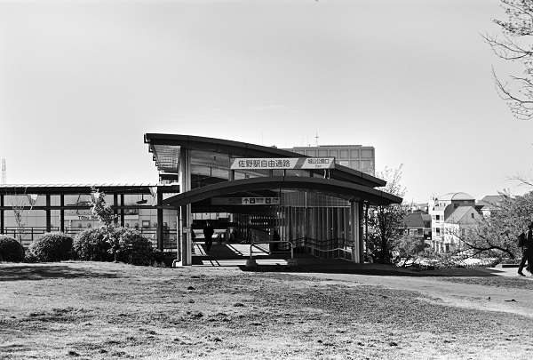
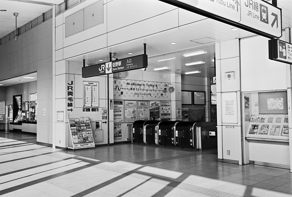

TI_佐野駅 Sano
富田駅←← 両毛線 →→ 岩舟駅佐野市駅←← 東武佐野線 →→堀米駅

2018/3/4 ﾐﾉﾙﾀCLE 35mm ｱｸﾛｽ

2018/3/4 ﾐﾉﾙﾀCLE 35mm ｱｸﾛｽ

2018/4/8 ﾍｷｻｰRF Cannon50mm ｱｸﾛｽ

2018/3/4 ﾐﾉﾙﾀCLE 35mm ｱｸﾛｽ

2018/3/4 ﾐﾉﾙﾀCLE 35mm ｱｸﾛｽ

2018/3/4 ﾐﾉﾙﾀCLE 35mm ｱｸﾛｽ

2016/6

